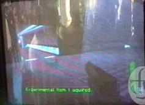
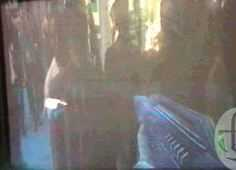
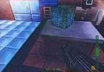
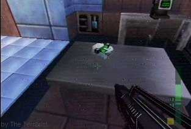
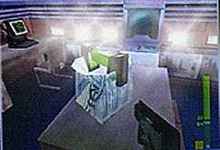
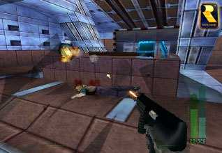
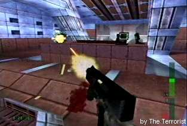
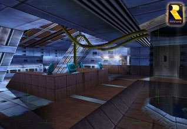
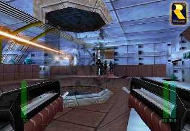
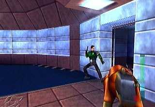

|
| Perfect
Dark Version Beta : Datadyne Investigation |
| Sur
ces 3 Photos, on voit juste que l'Objet Experimental N°1 ressemble
à un ZMG 9mm lorsqu'il est posé sur la Table (Photo
1). Sur les 2 autres Photos, tirées du meme Film, il n'y a
pas de Scientifique avec le Garde, contrairemment à la Version
Finale. |



Ici, le Fameux Cube Metallique de Goldeneye. C'est un Objet Banal servant juste a verifier l'emplacemment correct des Objets dans le Jeu. Par la Suite, Rare remplace l'image par le Bouclier Normal, et ainsi de suite pour tous les autres objets du meme Style. On trouve égalemment cet Objet etrange dans Goldeneye. La Troisième Photo est un Mix des Deux. |
  
Ci-dessous, 2 Trucs. D'abord, il y a un Civil (et Mort en plus) et les Ordinateurs ressemblent à ceux du Battle en Mode Hacker / PC. Les Civils furent plus tard remplacés par des Scientifiques. |
 
Ci-dessous, les Cables ne sont pas exactement aux meme endroit. Sur la Deuxième Photo, les fameux Doubles AR34. Pour plus d'infos, voir la Section Armes. Enfin, les 2 Dernieres Photo montrent Joanna équipée d'un Cyclone ! |


